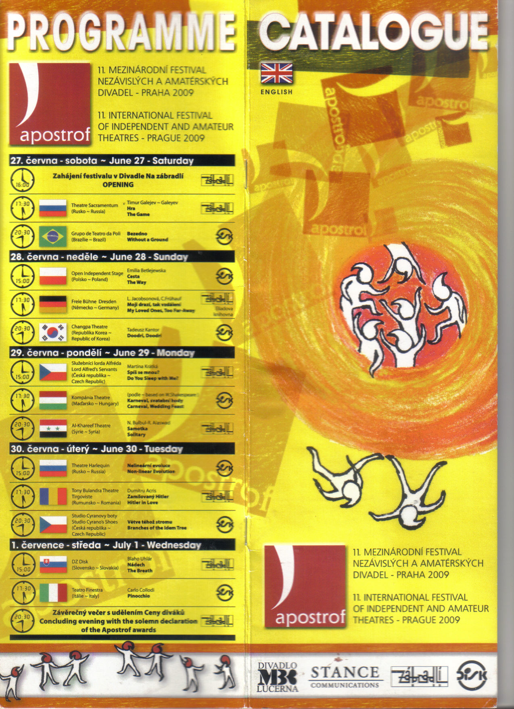
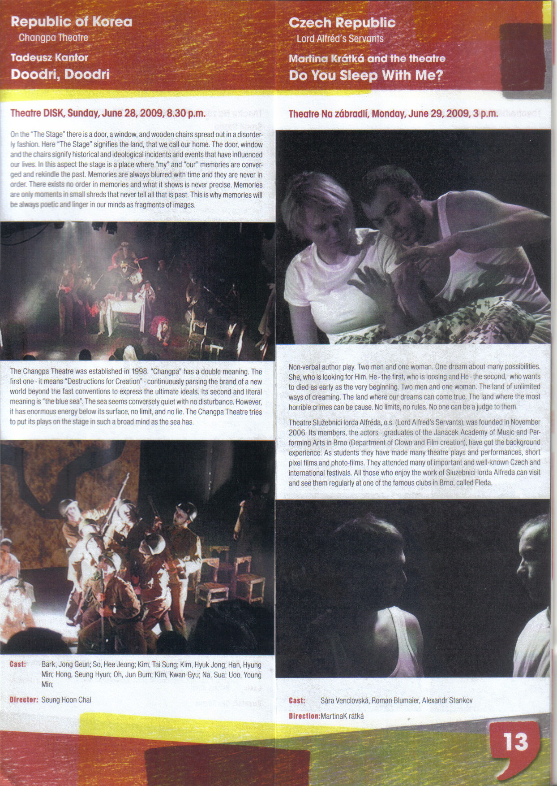
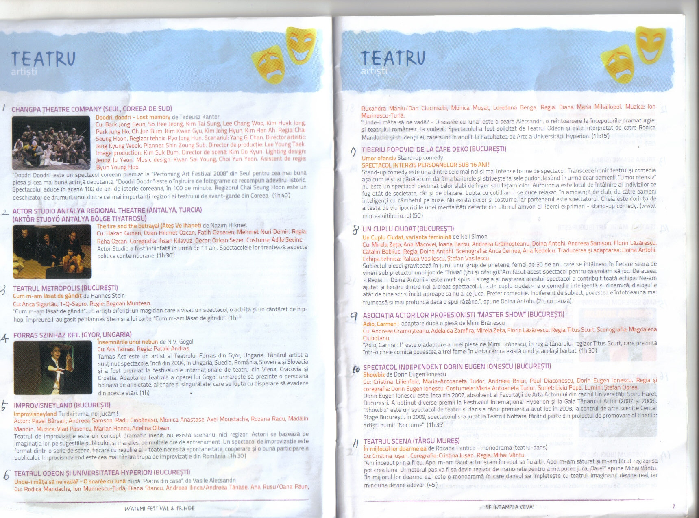

World archive
해외 초청 공연
창파의 무대가 다른 도시의 프로그램과 기록 속에 남은 장면을 모읍니다.
Invited records
프라하와 브라쇼브
해외 초청 공연 자료는 공연 사진뿐 아니라 프로그램북, 일정표, 현지 소개문까지 함께 보여 주는 별도 챕터로 확장할 수 있습니다.



World archive
창파의 무대가 다른 도시의 프로그램과 기록 속에 남은 장면을 모읍니다.
Invited records
해외 초청 공연 자료는 공연 사진뿐 아니라 프로그램북, 일정표, 현지 소개문까지 함께 보여 주는 별도 챕터로 확장할 수 있습니다.


